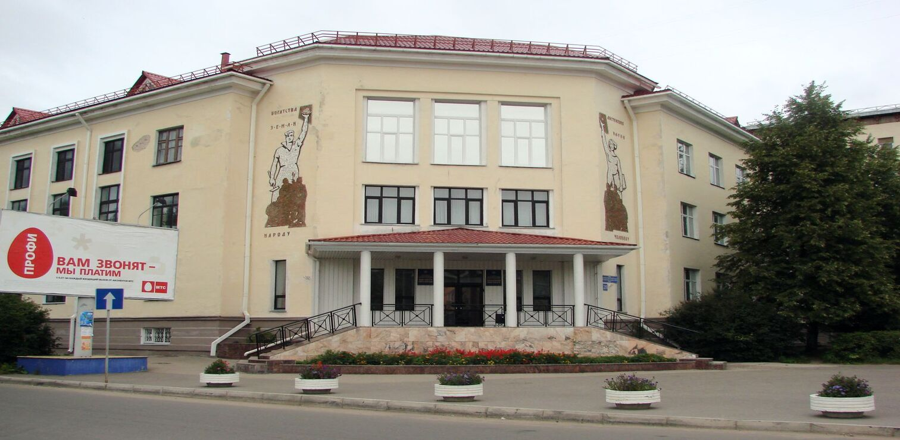
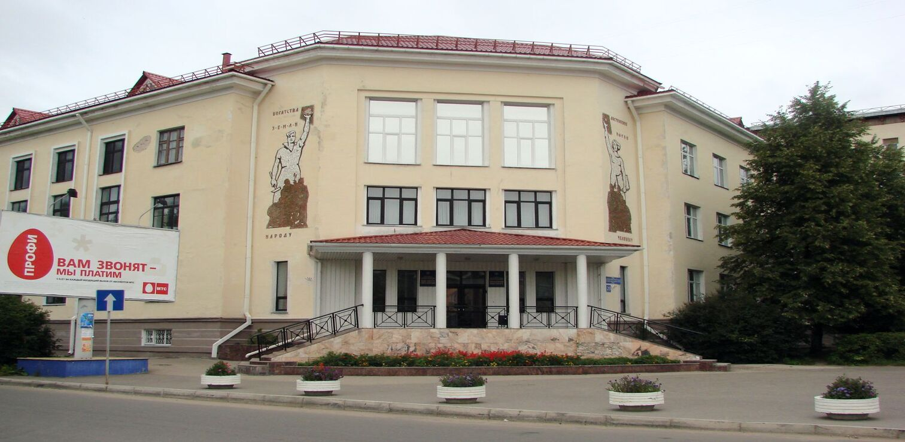

История создания Коми Научного Центра
История создания Коми Научного Центра
12.07.2000
Тематика конференции включала следующие проблемы: тектоника и эволюция палеозойских бассейнов, зональная стратиграфия; биотические события: аспекты границ и стандартов; нижний палеозой: проблемы корреляции; верхний палеозой: фации, фауна, корреляция, а также морфология и экология палеозойских беспозвоночных и позвоночных. Были представлены многочисленные доклады по тафономии, систематике, стратиграфическому распространению, фациальной приуроченности и биозональной корреляции разнообразных групп беспозвоночных. Новые исследования по корреляции радиологических данных и стратиграфического распространения остатков конодонтов в пограничных отложениях лландовери и венлока Канады, Балтики, Англии, Сибири и Северной Земли показали хронологически очень хорошо увязанные датировки основных колебаний уровня моря и смену фаунистических комплексов в это время. Особенно отчетливо проявились проблемы проведения границ крупных стратиграфических подразделений палеозоя, которые базировались в основном только на комплексах фауны, в нашем регионе и на Урале в целом. Результаты изотопных данных для целей стратиграфии, широко используемых зарубежными палеонтологами, показали несовершенность некоторых существующих ныне стратиграфических схем, где, при корреляции со стандартами ярусов, не устанавливалась связь событийных уровней с изотопными датировками. Проблемы, затронутые в докладах, вызвали большой интерес всех участников. Как отметили руководители Международного проекта 406 МаркУилсон, Пэп Мянник и Тийю Мярсс на заключительной дискуссии, что широкий круг проблем, поднятых и обсуждавшихся на нашей конференции, подвел итог исследованиям, которые проводились участниками проекта, и, кроме того, дал достаточно много нового материала. В рамках этой конференции были также проведены две полевые экскурсии: с 7 по 11 июля на Южный Тиман (Ухтинский район) с 16 по 26 июля на Приполярный Урал (Интинский и Ухтинский районы).
 
